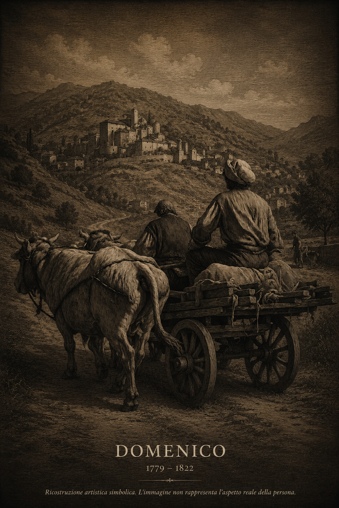

Ricostruzione artistica simbolica. L'immagine non rappresenta l'aspetto reale della persona.
Dati principali
| Nome | Domenico Giuseppe Cardiello |
|---|---|
| Nascita | 22 maggio 1779 |
| Luogo di nascita | Casale San Pietro |
| Morte | 1 marzo 1822 |
| Luogo di morte | Eboli |
| Padre | Antonio Giuseppe Angelo Cardiello |
| Madre | Rachele De Como |
| Professione | Bufalaro |
| Coniuge | Chiara Pinto |
| Matrimonio | 28 marzo 1802 |
| Luogo del matrimonio | Chiesa di San Nicola de Schola Graeca, Eboli |
| Figli documentati | 5 |
| Linea esposta | prosegue attraverso Nicola Cardiello |
Biografia
Domenico Giuseppe Cardiello nacque il 22 maggio 1779 a Casale San Pietro da Antonio Giuseppe Angelo Cardiello e Rachele De Como.
Rimasto orfano di padre all'età di circa sei anni, visse durante un periodo di profondi cambiamenti politici e sociali che interessarono il Regno di Napoli tra la fine del Settecento e l'inizio dell'Ottocento.
Tra la fine del XVIII secolo e i primi anni del XIX secolo si trasferì a Eboli. Qui, il 28 marzo 1802, sposò Chiara Pinto nella Chiesa di San Nicola de Schola Graeca.
Esercitò il mestiere di bufalaro nella fertile Piana del Sele, una delle attività agricole più caratteristiche dell'area ebolitana dell'epoca.
La famiglia abitò inizialmente in Strada della Selice e successivamente nei Quartieri Spagnoli di Eboli, in via Rua. Morì il 1 marzo 1822.
Il trasferimento a Eboli
Con Domenico Giuseppe Cardiello si verifica il più importante cambiamento geografico dell'intera linea familiare.
Per oltre un secolo la famiglia era vissuta a Casale San Pietro. Il trasferimento a Eboli segna l'inizio di una nuova fase storica che porterà la famiglia a radicarsi stabilmente nella Piana del Sele.
Da questo momento tutte le generazioni successive della linea paterna nasceranno e vivranno prevalentemente a Eboli.
Coniuge
Chiara Pinto
| Nascita | 15 gennaio 1780 |
|---|---|
| Morte | 5 giugno 1835 |
| Padre | Gaetano Pinto |
| Madre | Carmina Turco |
Figli documentati
| Nome | Data |
|---|---|
| Antonio | 1803–1809 |
| Rachele | 1805–1806 |
| Nicola | 1807–1857 |
| Rachele | 1810–1813 |
| Antonio | 1813–1881 |
Professione e condizione sociale
La professione di bufalaro colloca Domenico Giuseppe nel contesto agricolo della Piana del Sele, dove l'allevamento bufalino costituiva una delle principali attività economiche del territorio.
Luoghi
- Casale San Pietro
- Chiesa di San Nicola de Schola Graeca (Eboli)
- Strada della Selice (Eboli)
- Via Rua – Quartieri Spagnoli (Eboli)
Fonti
- Registro Battesimi
- Registro Matrimoni
- Registro Morti
Note genealogiche
Domenico Giuseppe rappresenta il vero ponte tra le origini della famiglia nel Vallo di Diano e il successivo radicamento a Eboli. Per questo motivo costituisce una delle figure più importanti dell'intera linea genealogica.
Documenti e approfondimenti
Sezione in aggiornamento. Saranno progressivamente inseriti documenti originali, mappe storiche e approfondimenti relativi al trasferimento della famiglia da Casale San Pietro a Eboli.